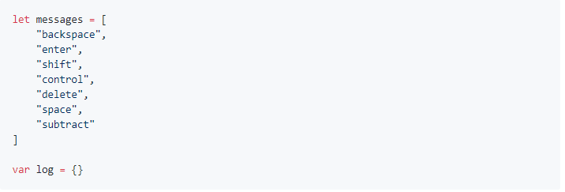
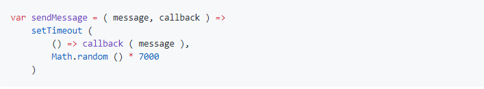
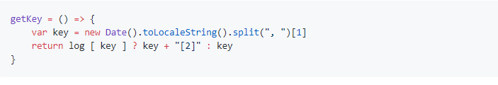
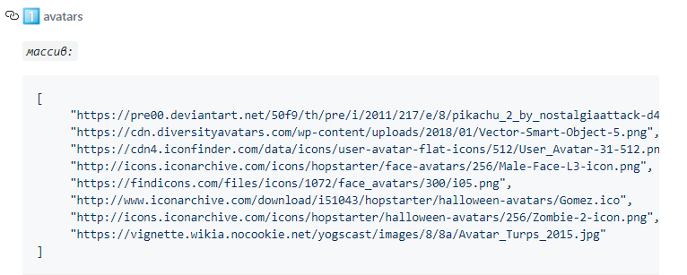
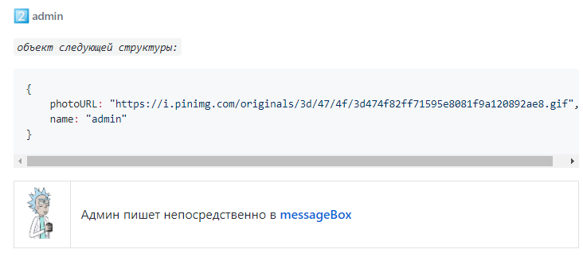
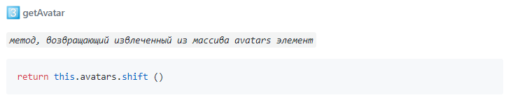
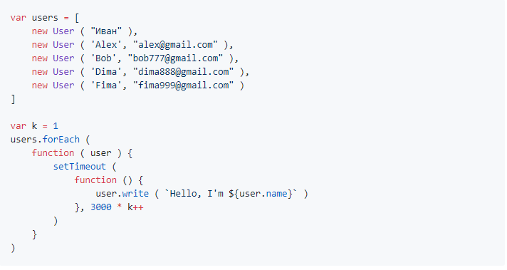

Загревская Людмила
fea-12
exercise 10.1
Логирование поступающих сообщений в объекте log
Задан массив сообщений и пустой объект log:
Далее, есть функция, отправляющая сообщения в случайном порядке в случайное время:
Обратите внимание, что эта функция получает при вызове не только текст сообщения, но и кoлбэк-функцию, которой нужно передать это сообщение
С помощью кода:
инициируем отправку сообщений
!warning:
Ваша задача - напилить код функции handler, которая получает сообщение и заносит его в объект log
в виде нового свойства, значение которого - текст поступившего сообщения,
а ключ ( имя свойства ) - это время поступления сообщения ( в виде строки )
В помощь вам уже есть функция, которая формирует ключ очередного сообщения:
На случай, если два сообщения поступят одновременно, функция getKey добавляет "[2]" к значению ключа ( иначе значения ключей двух сообщений будут совпадать )
exercise 10.2
Допилите код конструктора User, дополнив его акцессорами приватного свойства presence так, чтобы после выполнения скрипта:

в консоли было:
"Ivan is absent"
а после выполнения кода:
в консоли было:
"Ivan is present"
exercise 10.3
Объявить функцию-конструктор User
!warning: Конструктор должен принимать аргументы, описывающие юзера
Статические свойства и методы конструктора
У конструктора должны быть следующие :warning: не наследуемые экземплярами свойства и методы:
  Собственные свойства экземпляров
- name ( имя пользователя )
- photoURL ( URL фотографии пользователя )
- Конструктор должен иметь дефолтные значения для всех аргументов
- дефолтное значение URL фотографии пользователя должно быть результатом работы статического метода getAvatar
Унаследованные свойства экземпляров
- неперечислимое неизменяемое свойство messageBox - элемент DOM
- messageBox - это контейнер, куда будут выводиться сообщения всех пользователей и admin
- при выводе сообщения пользователя в messageBox должны отображаться его аватар и имя
- унаследованные методы write и read
- запись осуществляется в messageBox, чтение - из messageBox
После того, как конструктор будет объявлен, выполните код в консоли:
Короче, юзеры пишут в messageBox из консоли:
users[index].write ( text )
а вот админ - непосредственно вводит текст в messageBox ( т.е. при вводе в messageBox пишущий сообщение идентифицируется как админ, выводится его аватар и имя )